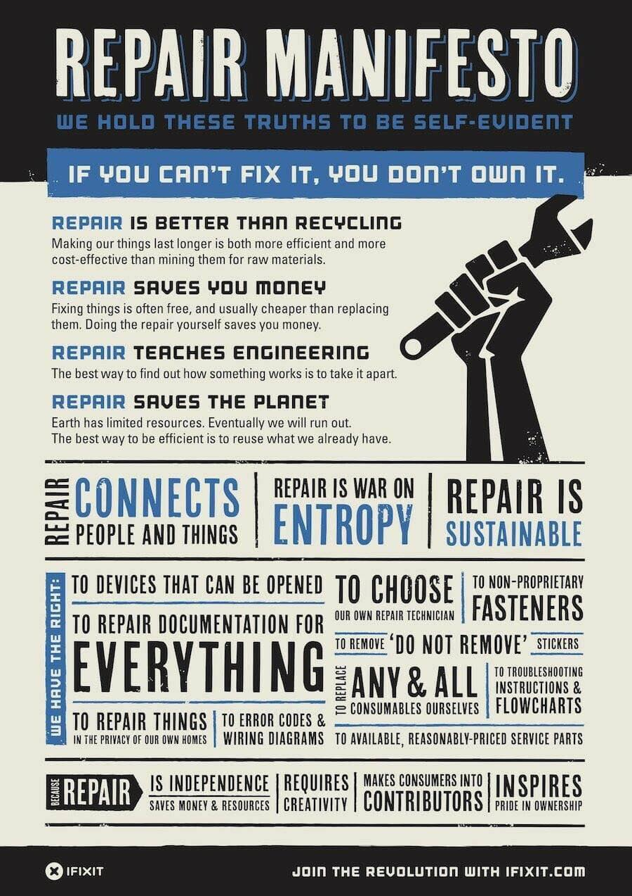

reading revision 6699

- How to Build a Multimachine, website
- Free construction plans by Ana White
- Things you're allowed to do
- The Passive House Resource
- Design for the Real World: Human Ecology and Social Change
- How to Build Your Own Living Structures
- How to Build With Gridbeam
- Land Institute: Perennial crops
- The Open Source Way
- Community Barriers to Entry Checklist
- Open Source barriers to entry, revisited: A tools perspective
- A Pattern Language - patterns
- The Timeless Way of Building
- The Cluetrain Manifesto
- Cryptoparty Handbook
- Free Culture
- Internet Archive Architecture Folkscanomy
- Culture Breakers
- Toward Open Source Hardware
- Detailed Design for Assembly Guidelines
- DIY Water Treatment Train
- Enzo Mari Autoprogettazione Mirror
- Five Gallon Bucket Hydroelectric Generator Build Manual
- Getting started with netduino
- Integrated Buildings The Systems Basis of Architecture
- Lessig Code v2
- Mini Maker Faire Playbook
- N55BOOK
- Solar Power In Building Design
- Space Grid Structures
- Michigan Home Built Vehicle Inspection
- Gridbeam Instagram
- The Rust Programming Language
- Permaculture Wikipedia
- Unix philosophy
- Build Your Own Metal Working Shop From Scrap - David J. Gingery
- Practical Action Knowledge Center
- Howtopedia
- Appropedia
- The Museum of Old Techniques
- Traditional Knowledge World Bank
- Primitive ways
- Rocket Mass Heaters: Superefficient Woodstoves YOU Can Build
- The Mythical Man-Month
- The Cathedral and the Bazaar
- Business models for open source software
- Open Source Hardware Business Models
- Wiki for a better world
- Gathering for Open Agricultural Technology
- 1800 Mechanical movements, devices, and appliances
- 507 Mechanical Movements
- Totalism: Alike
- Connections by James Burke
- The Heathkit legacy
- Situated learning: legitimate peripheral participation
- Communities of practice: learning meaning and identity
- Building successful communities of practice
- Cultivating communities of practice
- The law of leaky abstractions
- The Systems Bible: The Beginner's Guide to Systems Large and Small
- Safety-I and Safety-II: The Past and Future of Safety Management, Presentation
- OpenStax
- A Gentle Introduction to Ted Nelson's ZigZag Structure
- Woodgears.ca
- How to Ask Questions the Smart Way
- Direct Use Of The Sun's Energy